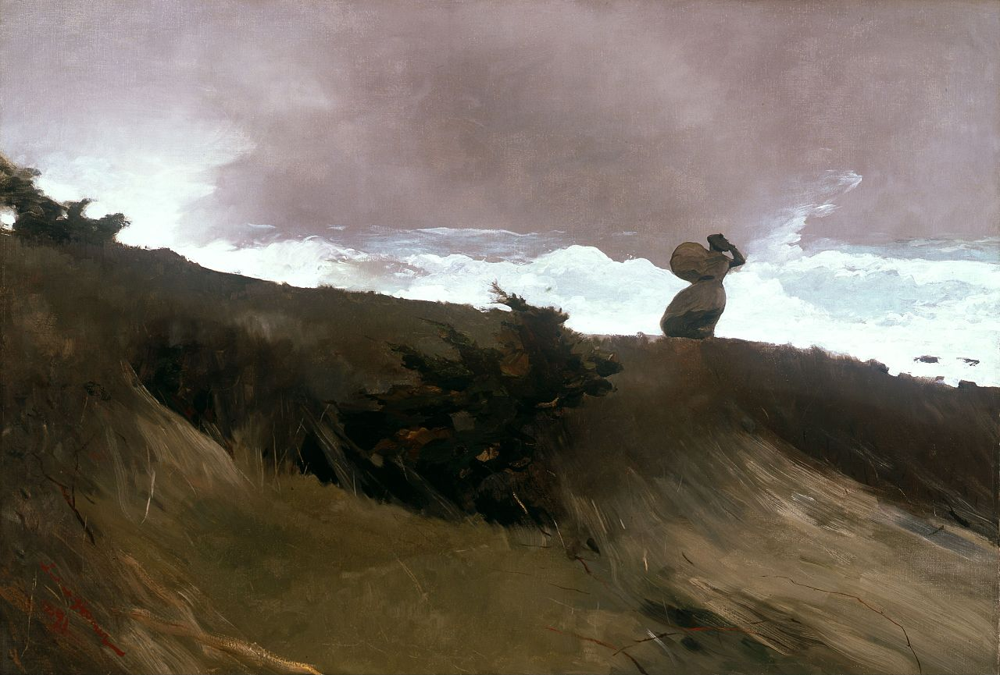

Słowa i obrazy
W jej rozedrganych falach
Wciąż jeszcze jest we mnie jakiś wielki zamęt, wszystko, czego doświadczam, jest cierpieniem, wszystko, na co spoglądam, sprawia mi ból. Nie jestem poszukiwaczem wrażeń, ich ostrza i kanty wbijają mi się w dłonie i głęboko mnie ranią, niemal wbrew mej woli, to zaś, czego pragnąłbym zaznać, wymyka mi się z rąk jak woda i płynie dalej, zaledwie pozwalając mi przejrzeć się w jej rozedrganych falach.
— Z listu do Lou Andreas-Salomé, przeł. W. Markowska
Winslow Homer „The West Wind”, 1891